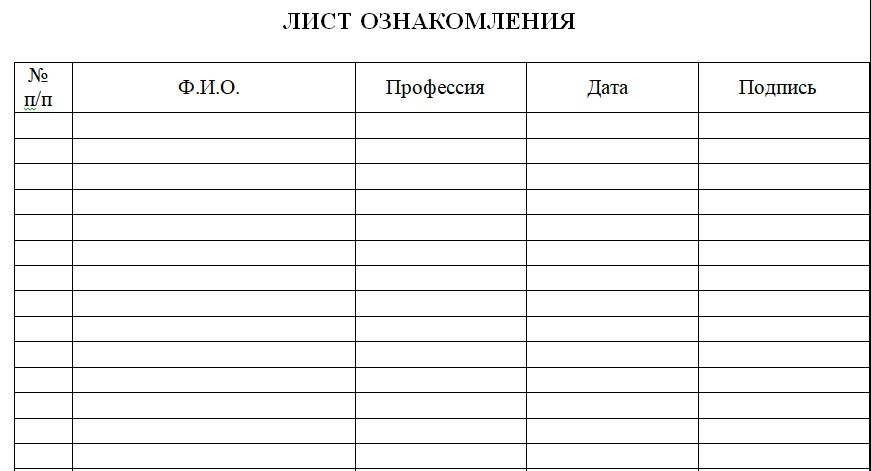
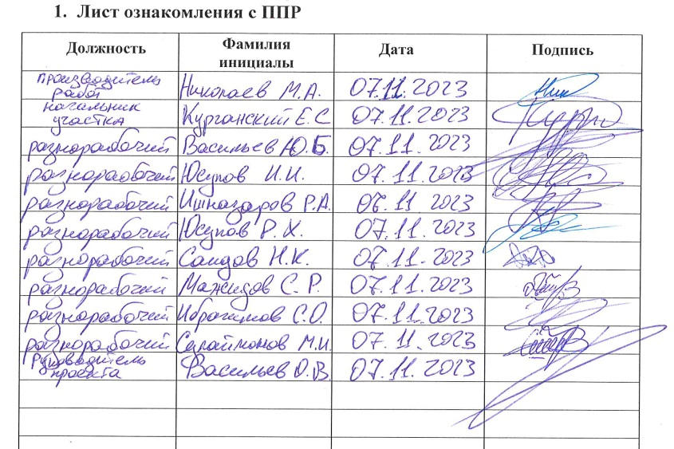

Лист ознакомления и внесение изменений в ППР

На этом уроке разберем, для чего нужен лист ознакомления, а также как вносить изменения в ППР. В конце урока вы поймете, почему я соединила эти две темы в одну.
Для чего нужен лист ознакомления
Лист ознакомления подтверждает, что каждый участник процесса, от директора до монтажника, изучил технологию и требования безопасности.
На что обратить внимание:
- Запас страниц. Рассчитывайте количество листов по штатному расписанию с запасом 15-20%. На крупных объектах это сотни людей. Если места для подписей не хватит, добавление новых листов в сброшюрованный том приведет к нарушению нумерации.

- Связь с журналами. Строгие заказчики сверяют подписи в ППР с журналами по охране труда и технике безопасности. Их количество должно совпадать, поэтому удобнее всего совмещать эти процедуры.

- Риски и ответственность. Отсутствие подписей – одно из самых частых замечаний при проверках. Для инспектора это сигнал, что сотрудники работают «вслепую» и не знают технологий и требований безопасности.
Как вносить изменения в ППР
В процессе строительства нередко возникает необходимость внести корректировки в уже согласованный документ. Это может касаться как отдельных этапов (технологических карт), так и всего проекта целиком.
Частые причины внесения изменений:
- замена материалов или оборудования на доступные аналоги;
- изменение технологии из-за отсутствия нужной техники или инструментов;
- обновление проектной документации или исправление ранее допущенных ошибок;
- выявление неучтенных инженерных сетей и коммуникаций;
- перенос строительного городка или складских зон.
Нормативы не устанавливают единых правил внесения изменений в ППР. Для оформления корректировок используйте ГОСТ Р 2.105‑2019, который описывает порядок редактирования текстовой части документации.
Важные нюансы нумерации:
- Номер документа.
- Входящий номер.
Основные принципы внесения изменений по ЕСКД:
- Исправление в оригинале.
- Замена отдельных листов или добавление новых страниц.
- Удаление отдельных листов.
- Полная замена документа новым вариантом.
Упражнение. Определите, в каких случаях необходимо вносить изменения в ППР, а в каких – нет.
Теперь вы знаете, что эти две темы связаны неразрывно: любые изменения в ППР делают предыдущий лист ознакомления недействительным. Чтобы сохранить юридическую силу документа, любая корректировка должна сопровождаться новыми подписями сотрудников. Иными словами, новая версия документа — новый цикл ознакомления.
Поздравляю вас с окончанием первого модуля программы повышения квалификации «Разработчик ППР». В следующем модуле вы научитесь подробно описывать ход строительства: от подготовительного до основного периода выполнения работ. А пока переходите к выполнению промежуточного теста, чтобы подтвердить свой текущий прогресс обучения.